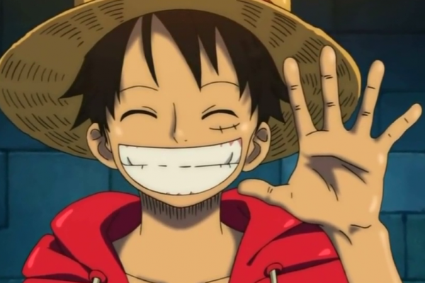
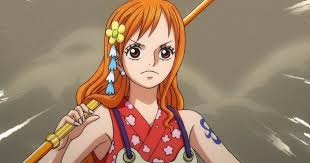
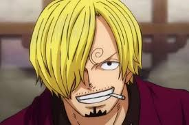

Luffy
Dia adalah kapten dari bajak laut topi jerami. Saat ini dia memliki nilai buronan 3M

Nami
Dia adalah anggota bajak laut Luffy, Nami berperan sebagai navigator di bajak laut topi jerami.

Zoro
Zoro juga merupakan anggota bajak laut Luffy, dia bertarung meggunakan 3 pedang

Sanji
Dia adalah Sanji. Dia juga anggota bajak laut Luffy, tugasnya di kapal adalah sebagai koki